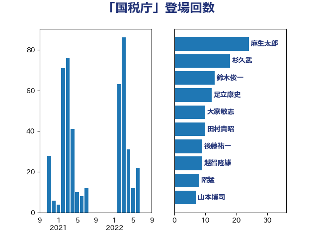

単語「国税庁」

| 麻生太郎 | 自由民主党 | 24 回 |
| 杉久武 | 公明党 | 18 回 |
| 鈴木俊一 | 自由民主党 | 13 回 |
| 足立康史 | 日本維新の会 | 12 回 |
| 大家敏志 | 自由民主党 | 10 回 |
| 田村貴昭 | 日本共産党 | 10 回 |
| 後藤祐一 | 立憲民主党 | 9 回 |
| 越智隆雄 | 自由民主党 | 9 回 |
| 階猛 | 立憲民主党 | 8 回 |
| 山本博司 | 公明党 | 7 回 |
| 伊藤渉 | 公明党 | 6 回 |
| 柳本顕 | 自由民主党 | 6 回 |
| 下条みつ | 立憲民主党 | 5 回 |
| 芳賀道也 | 国民民主党 | 5 回 |
| 薗浦健太郎 | 自由民主党 | 5 回 |
| 音喜多駿 | 日本維新の会 | 5 回 |
| 櫻井周 | 立憲民主党 | 4 回 |
| 牧山ひろえ | 立憲民主党 | 4 回 |
| 西村康稔 | 自由民主党 | 4 回 |
| 塩川鉄也 | 日本共産党 | 3 回 |
| 宮本岳志 | 日本共産党 | 3 回 |
| 若松謙維 | 公明党 | 3 回 |
| 道下大樹 | 立憲民主党 | 3 回 |
| 高橋光男 | 公明党 | 3 回 |
| 三浦信祐 | 公明党 | 2 回 |
| 中根一幸 | 自由民主党 | 2 回 |
| 古賀之士 | 立憲民主党 | 2 回 |
| 國重徹 | 公明党 | 2 回 |
| 山田美樹 | 自由民主党 | 2 回 |
| 岡本三成 | 公明党 | 2 回 |
| 平井卓也 | 自由民主党 | 2 回 |
| 梶山弘志 | 自由民主党 | 2 回 |
| 森田俊和 | 立憲民主党 | 2 回 |
| 福田昭夫 | 立憲民主党 | 2 回 |
| 竹谷とし子 | 公明党 | 2 回 |
| 落合貴之 | 立憲民主党 | 2 回 |
| 野上浩太郎 | 自由民主党 | 2 回 |
| 長谷川岳 | 自由民主党 | 2 回 |
| あべ俊子 | 自由民主党 | 1 回 |
| 上月良祐 | 自由民主党 | 1 回 |
| 住吉寛紀 | 日本維新の会 | 1 回 |
| 勝部賢志 | 立憲民主党 | 1 回 |
| 原口一博 | 立憲民主党 | 1 回 |
| 古屋範子 | 公明党 | 1 回 |
| 吉田統彦 | 立憲民主党 | 1 回 |
| 大西健介 | 立憲民主党 | 1 回 |
| 宮本徹 | 日本共産党 | 1 回 |
| 岸田文雄 | 自由民主党 | 1 回 |
| 岸真紀子 | 立憲民主党 | 1 回 |
| 平口洋 | 自由民主党 | 1 回 |
| 斎藤洋明 | 自由民主党 | 1 回 |
| 新谷正義 | 自由民主党 | 1 回 |
| 本村伸子 | 日本共産党 | 1 回 |
| 根本匠 | 自由民主党 | 1 回 |
| 森山浩行 | 立憲民主党 | 1 回 |
| 橋本岳 | 自由民主党 | 1 回 |
| 武部新 | 自由民主党 | 1 回 |
| 渡辺創 | 立憲民主党 | 1 回 |
| 田村憲久 | 自由民主党 | 1 回 |
| 石垣のりこ | 立憲民主党 | 1 回 |
| 石川博崇 | 公明党 | 1 回 |
| 稲富修二 | 立憲民主党 | 1 回 |
| 穀田恵二 | 日本共産党 | 1 回 |
| 笠井亮 | 日本共産党 | 1 回 |
| 菅義偉 | 自由民主党 | 1 回 |
| 藤原崇 | 自由民主党 | 1 回 |
| 赤羽一嘉 | 公明党 | 1 回 |
| 逢坂誠二 | 立憲民主党 | 1 回 |
| 金子恭之 | 自由民主党 | 1 回 |
| 金田勝年 | 自由民主党 | 1 回 |
| 鈴木馨祐 | 自由民主党 | 1 回 |
| 須藤元気 | 無所属 | 1 回 |
| 高鳥修一 | 自由民主党 | 1 回 |